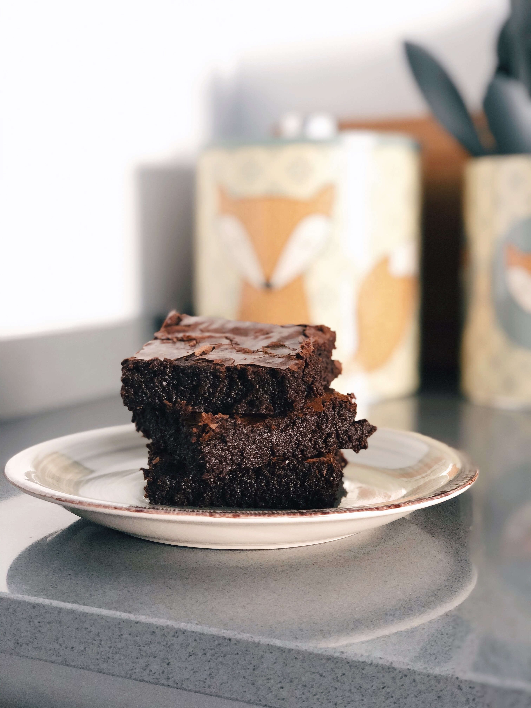

Brownies

Description
Few bad days can't be fixed with a warm brownie. Owing to the browned butter, dark chocolate,
and brown sugar, these brownies are chewy, rich, and complex without being overly sweet. They are the
perfect vehicle for your favorite vanilla ice cream!
Ingredients
- 1/2 cup butter, unsalted
- 2 cups (12 oz) bittersweet chocolate chips
- 1/2 cup granulated sugar
- 1/2 cup brown sugar
- 1 tsp vanilla extract
- 3 eggs, room temperature
- 1/4 tsp baking soda
- 1/2 tsp kosher salt
- coarse salt, to garnish (optional)
Steps
- In a medium saucepan, cook butter over medium-low heat, stirring often, until it foams,
then browns, about 5-8 minutes. Scrape into a large bowl and let cool slightly, taking care
not to leave any brown bits behind.
- Add 1 cup of chocolate chips to the browned butter, melting the chocolate. Stir until smooth.
- Preheat the oven to 350 degrees Fahrenheit. Prepare a 13x9 baking pan with cooking spray. In
another bowl, mix together flour, baking soda, and salt. Set aside.
- Add both sugars to the chocolate mixture, stirring until combined. Make sure the mixture
is not hot, then add the eggs. Stir in the vanilla; mix well.
- Add the flour mixture to the chocolate mixture, mixing only enough to incorporate the flour.
Reserve a handful of chocolate chips, then stir in the remaining chips.
- Pour batter into prepared baking pan, spreading to cover. Sprinkle with reserved handful of
chocolate chips and coarse salt, or other add-ins, if desired.
- Bake for 18-22 minutes or until a toothpick inserted in the center comes out mostly clean.
Cool until warm; cut into bars. Cool completely and store at room temperature in an airtight container.